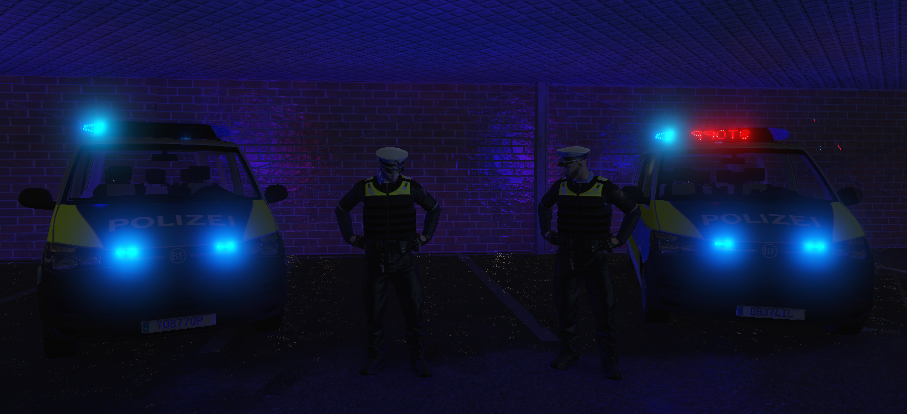

Dies ist ein Einblick in den Job der Polizei.
Du sorgst für Recht, Ordnung und Sicherheit im gesamten Staat Nordkirchen.
Jetzt bewerben
Bewahre die Sicherheit der Stadt durch Streifenfahrten, Ermittlungen und Einsätze.
Verhaftere Kriminelle, führe Kontrollen durch & arbeite mit dem Justizsystem.
Im Einsatz seid ihr nie allein – Koordination mit HQ, Streife & Sondereinheit.
Täglich neue Schichten & spannende Fälle
Mit Blaulicht zum Tatort – jederzeit bereit
Werde Streifenbeamter, Ausbilder oder Chief